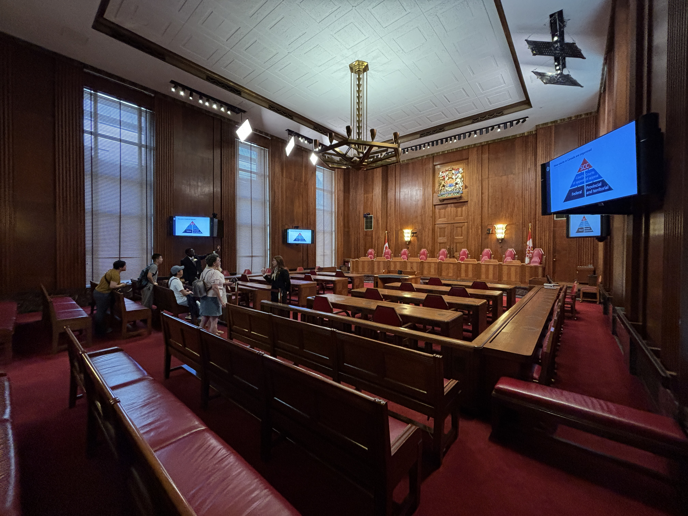
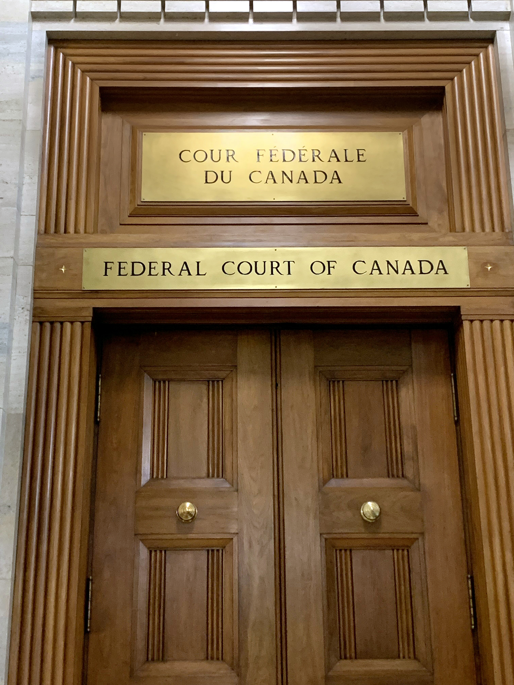

Table of Contents
Choose a chapter
This law book is designed so each part of the research can be opened directly. Use the table of contents, the page buttons, or the keyboard arrows.
Medical Assistance in Dying (MAID) in Canada
Table of Contents
This law book is designed so each part of the research can be opened directly. Use the table of contents, the page buttons, or the keyboard arrows.
Chapter 01

Not allowing people to have access to MAID would violate their section 7 rights, specifically the right to be free from government-imposed restrictions that cause unnecessary physical or psychological suffering (Koller, 2026). It would violate their right to die and do so with dignity (Canadian Human Rights Commission, 2024).
At the same time, they don’t want people to abuse it (Department of Justice Canada, 2021).
Some parties are recommending expanding it to “mature minors” and people with mental illnesses (Doelle, 2022; Government of Canada, n.d.).
Chapter 02

It’s about/for people who are terminally ill with a reasonably foreseeable death and people who are suffering from a “grievous and irremediable medical condition” (Government of Canada, n.d.).
People who are victims of systemic problems such as poverty, homelessness, etc (Canadian Human Rights Commission, 2024).
People who are suffering from mental illnesses (Dying With Dignity Canada, 2026).
Chapter 03
MAID became legal on June 17, 2016, and has been getting ongoing adjustments (Department of Justice Canada, 2021). In 2016, it was only allowed for people with a reasonably foreseeable death (Koller, 2026).
However in 2021, a new track, “Track 2”, was introduced. This allowed people who were suffering with irreversible conditions, even if they didn’t have a foreseeable death, to access MAID (Department of Justice Canada, 2021).
However, individuals whose sole underlying condition is a mental illness are strictly excluded from the program (Government of Canada, n.d.).

Chapter 04
Canada: This issue is centrally in Canada with ethical debates taking place (Doelle, 2022).
United States: It is allowed in 10 states in the US, but highly regulated (Doelle, 2022).
Australia: It is allowed in a few Australian states, but highly regulated (Doelle, 2022).
Netherlands and Belgium: It is allowed in the Netherlands and Belgium, still heavily regulated (Doelle, 2022).
Chapter 05
Because people started speaking up on how it violates their rights (Canadian Human Rights Commission, 2024).
It was making people who were suffering, with no end in sight, to continue suffering (Dying With Dignity Canada, 2026).
Chapter 06
Bill C‑14 (2016): This created the first legal framework for MAID. It only allowed competent adults whose natural death was “reasonably foreseeable” to have access to it (Koller, 2026).
Bill C‑7 (2021): After court challenges, this law created a two‑track system. Track 1 covers people whose death is reasonably foreseeable. Track 2 expanded it to people with a chronic, incurable, and intolerable illness or disability whose death is not reasonably foreseeable (Department of Justice Canada, 2021).
Bill C‑62 (2024): This legislation legislated a temporary exclusion. It delayed MAID eligibility for people whose only condition is a mental illness until March 17, 2027 (Government of Canada, n.d.).
Section 7: Section 7 (Right to Life, Liberty, and Security of the Person): The Supreme Court of Canada used Section 7 in the landmark Carter v. Canada (2015) ruling to strike down the criminal ban on assisted dying. The court argued that forcing a person to endure intolerable suffering or resort to early, unsafe suicide violates their bodily autonomy and personal security (Koller, 2026).
Section 15: Section 15 (Equality Rights): Section 15 states that every individual is equal under the law without discrimination based on mental or physical disability (Koller, 2026).
Pro‑MAID advocates argue that denying someone assisted dying based solely on a psychiatric condition or disability is discriminatory under Section 15. On the other hand, disability rights advocates argue that expanding Track 2 MAID creates a systemic inequality, suggesting that lives lived with disabilities are inherently less valuable or less worthy of protection (Canadian Human Rights Commission, 2024; Inclusion Canada, 2025).
Chapter 07
It’s important because it highlights a blatant systemic problem in our society where people who are impoverished, have disabilities, or are homeless only have two options: continue living with their unfair circumstances, or die a painless death (Canadian Human Rights Commission, 2024; Inclusion Canada, 2025).
For the people who have been living in these conditions for possibly their whole lives, it seems like a good choice to end their suffering. The people who make the rules couldn’t truly understand the mental state of someone who’s been suffering and finally gets a painless way to stop it, because most of us have had it good since the day we were born, including me.
A conflict exists between federal and provincial laws. For example, Quebec legally permits “advance requests” for patients with degenerative conditions (like Alzheimer’s). However, these remain illegal under the federal Criminal Code. In response, provincial directives told prosecutors not to pursue criminal charges against doctors. Over time, criminal and healthcare legislation has to change its definition of a state’s duty to protect life versus its duty to respect personal autonomy. It forces a baseline rewriting of criminal liability, medical malpractice, and health regulations (Koller, 2026).
Chapter 08
Legal groups focus on constitutional rights, arguing that under Section 7 of the Charter, a capable adult has a complete right to bodily autonomy and medical self‑determination. Denying someone access to healthcare choices based solely on a psychiatric diagnosis or long‑term disability is viewed as discriminatory under Section 15 (Koller, 2026; Dying With Dignity Canada, 2026).

Human rights scholars and disability groups strongly oppose expansions, viewing “Track 2” MAID as systemic discrimination that devalues marginalized lives. They argue that true free will cannot exist when the government fails to provide affordable housing, specialized care, or living income, leaving vulnerable people to choose death simply due to poverty (Canadian Human Rights Commission, 2024; Inclusion Canada, 2025).
Chapter 09
In 2021 it was changed to a two‑track system to include people with a chronic, incurable, and intolerable illness or disability whose death is not reasonably foreseeable (Department of Justice Canada, 2021).
It has stayed firm on only allowing people with physical disabilities and who are over 18 to have access to MAID (Government of Canada, n.d.).
Chapter 10
Terminally or chronically ill patients use the court system to challenge laws, which forces the federal government to change the Criminal Code to allow broader MAID access (Koller, 2026).
Patient rights groups lobby and sue to expand autonomy, while disability and human rights organizations intervene to restrict access, warning that systemic poverty and underfunding coerce vulnerable people into choosing death (Canadian Human Rights Commission, 2024; Inclusion Canada, 2025).
The federal government constantly makes reactive legislation to meet court deadlines, while provincial governments create regulatory rules, such as Quebec bypassing federal criminal bans to allow advance requests locally.
Chapter 11
It’s a delicate example because on one hand I don’t want anyone to suffer with no end in sight and to be able to die with dignity, but I don’t want people to just die because our society/government isn’t doing enough to protect vulnerable groups (Canadian Human Rights Commission, 2024).
I’m especially against allowing people who only have mental illnesses to have access to MAID, but then I also put myself in their shoes and think what if I’m suffering in my head, that’s the same or worse as physical suffering, and there’s no end in sight for my suffering. If I’m forced to live with that for the rest of my life, I would probably find other ways to escape, which could end up with more harmful ways of suicide.
So what I’m trying to say is if we want to expand we need to be able to differentiate between actual suffering and just trying to get out of bad circumstances (Government of Canada, n.d.; Canadian Human Rights Commission, 2024).
Chapter 12
There needs to be strict safeguards made if expansion continues, especially if it includes mental illnesses and minors. We need to be able to differentiate between actual suffering and just trying to get out of bad circumstances, and even a kid whose hormones are changing and over-exaggerating what’s happening in their mind (Doelle, 2022).
Also, the government needs to make it so that these groups basically have no choice to die painlessly, unless they want to continue suffering in poverty, homelessness, etc. (Canadian Human Rights Commission, 2024).
Chapter 13
Canadian Human Rights Commission. (2024, February 23). Ending one’s life must be a true and informed choice. https://www.chrc-ccdp.gc.ca/resources/newsroom/ending-ones-life-must-be-true-and-informed-choice
Department of Justice Canada. (2020, March). What we heard report: A public consultation on medical assistance in dying (MAID). Government of Canada. https://www.justice.gc.ca/eng/cj-jp/ad-am/wwh-cqnae/p2.html#s2-6-3
Department of Justice Canada. (2021, March 17). New medical assistance in dying legislation becomes law. Government of Canada. https://www.canada.ca/en/department-justice/news/2021/03/new-medical-assistance-in-dying-legislation-becomes-law.html
Doelle, A. (2022, October 28). Medical assistance in dying around the world. Dying With Dignity Canada. https://www.dyingwithdignity.ca/blog/medical-assistance-in-dying-around-the-world/
Dying With Dignity Canada. (2026, April 20). Submission to the Special Joint Committee on Medical Assistance in Dying re: MI-SUMC. House of Commons. https://www.ourcommons.ca/Content/Committee/451/AMAD/Brief/BR14026084/br-external/DyingWithDignityCanada-e.pdf
Health Canada. (2025, August 27). Medical assistance in dying: Overview. Government of Canada. https://www.canada.ca/en/health-canada/services/health-services-benefits/medical-assistance-dying.html
Inclusion Canada. (2025, March 10). A person dying everyday: Canadian disability advocates highlight Canada’s controversial MAiD program at United Nations review. https://www.inclusioncanada.ca/post/a-person-dying-everyday-canadian-disability-advocates-highlight-canada-s-controversial-maid-program
Koller, J. (2026, April 1). Navigating MAiD: From crime to care. Reynolds Mirth Richards & Farmer LLP. https://rmrf.com/navigating-maid-from-crime-to-care/
MAiD in Canada. (n.d.). MAID and mature minors, part 2. Substack. https://maidincanada.substack.com/p/maid-and-mature-minors-part-2-the
Nicol, J., & Tiedemann, M. (2020, March 27). Library of Parliament legislative summary of Bill C-7: An Act to amend the Criminal Code (medical assistance in dying). Government of Canada. https://www.justice.gc.ca/eng/trans/bm-mb/other-autre/c7/summary-resultats.html
Sudbury.com. (n.d.). Opinion: Assisted death shouldn’t be the answer when social supports fail. https://www.sudbury.com/columns/guest-columns/opinion-assisted-death-shouldnt-be-the-answer-when-social-supports-fail-12369327
Vancouver Sun. (n.d.). Opinion: Canada should stop the expansion of MAID for mental illness once and for all. https://vancouversun.com/opinion/op-ed/opinion-canada-should-stop-the-expansion-of-maid-for-mental-illness-once-and-for-all